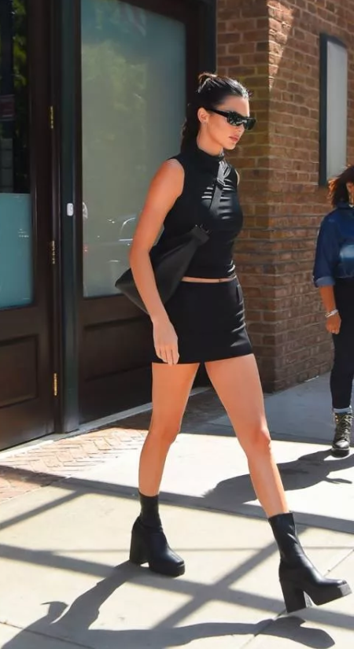

Trendy
Miłośnicy mody, pokazujemy wam najnowsze trendy.

Trend na teraz: Masywne kozaki noszone na gołą nogę
Żegnajcie sandały, witajcie botki i kozaki. W tym sezonie im bardziej masywne, tym lepiej. Mogą mieć
fason kaloszy, jeździeckich oficerek albo być awangardową wariacją na temat klasyki. W najmodniejszym
wydaniu nosimy je z ultra krótką spódniczką i spodenkami, balansując tym samym na granicy lata i
jesieni.
Dua Lipa była jedną z pierwszych gwiazd, które pokusiły się o własną interpretację tego trendu. Pod
koniec sierpnia świętowała urodziny w sztywnej sukience o fasonie marynarki od Maximiliana Davisa i
wysokich kozakach z kolekcji Dora Teymur. Na podobne zestawienie zdecydowała się Bella Hadid – modelka,
a prywatnie siostra chłopaka Duy, Anwara. Młodsza z sióstr Hadid wiązane kozaki na masywnej podeszwie
połączyła z kraciastą sukienką vintage i modnym paskiem z łańcuchów.
Kozaki i krótka spódniczka (lub sukienka) to zresztą idealne rozwiązanie na wrześniową pogodę, gdy
jesień coraz częściej daje o sobie znać, ale lato nie składa jeszcze broni. Duet ten nawiązuje też do
trendu Y2K – w inspirowanym modą z lat 2000. wydaniu noszą go chociażby Kendall Jenner i modelka Edie
Campbell.
Kto woli inspirację z wybiegów, ten powinien zajrzeć do relacji z pokazów Coperni oraz Bottegi Venety.
Młoda francuska marka, która zasłynęła z kozaków z szeroką cholewką i na geometrycznym obcasie, w tym
sezonie proponuje model za kolano i zachęca, by nosić go w wieczorowym wydaniu, z prześwitującą sukienką
mini. Z kolei Daniel Lee w domu mody Bottega Veneta prezentuje nowe wersje „gumiaków” i eksperymentuje z
grubością podeszwy.
Księżyc na nadgarstku
Zegarki z linii The Longines Master Collection łączą elegancki design z poręczną funkcjonalnością.
Wyróżnia je również wskaźnik faz Księżyca. To idealny prezent dla miłośniczek astrologii.
Jesień to idealny czas na odświeżenie garderoby. W tym sezonie, obok klasycznych brązów i beży, królować
będą kolory, znów będziemy nosić dzianiny, do łask powrócą też zwierzęce printy. Wybierając dodatki,
warto postawić na wyraziste akcesoria, które posłużą nam latami. Jednym z ponadczasowych dodatków, w
które warto zainwestować, są zegarki, np. te od Longines. Szwajcarska marka, której historia sięga XIX
w., ceniona jest za umiejętny mariaż eleganckiego designu i funkcjonalności.
Jedną z najbardziej unikatowych kolekcji w dorobku marki jest The Longines Master Collection. To linia,
która wraca do podstaw sztuki zegarmistrzowskiej – wszystkie czasomierze są wyposażone w tradycyjne
mechanizmy, zamknięte w eleganckiej oprawie. Projektanci marki zadbali oczywiście o wiele niezbędnych
funkcji – zegarek nie tylko wskazuje godzinę, ale jest również wyposażony w datownik, chronograf, pełen
kalendarz i wskaźnik, który przypomni o konieczności ponownego nakręcenia zegarka.
Tym, co wyróżnia zegarki The Longines Master Collection, jest też wskaźnik faz Księżyca, od teraz
dostępny również w linii dla kobiet. Kolekcja wpisuje się w renesans astrologii i fascynacji rytmem
natury. Idea cykliczności to również niezmienne inspiracje projektantów marki spod znaku uskrzydlonej
klepsydry. Wzbogacenie modelu o księżycowy wskaźnik na 34-milimetrowej kopercie wymagało od
zegarmistrzów marki niezwykłego kunsztu, a ostateczny kształt zegarka to efekt setek godzin pracy. Ich
wysiłek się opłacił. Czasomierze z linii The Longines Master Collection to małe dzieła sztuki.
Kopertę wykonano z szafirowego szkła, tarczę z masy perłowej, a indeksy godzinowe – z połyskujących
brylantów. Zegarmistrzowie marki zadbali również, by modele z linii The Longines Master Collection były
zarazem lekkie, wytrzymałe i odporne na uszkodzenia. Nowa edycja kolekcji pozwala również dopasować
zegarek do indywidualnego stylu. Czasomierze są dostępne na paskach skórzanych – w kolorze karminowej
czerwieni, głębokiego indygo i klasycznej szarości – lub na bransolecie. Model jest również dostępny w
wersji z niebieską tarczą ze słonecznym szlifem lub srebrzystą tarczą ze wzorem kłosa jęczmienia.
Zegarki z linii The Longines Master Collection to idealny pomysł na prezent. Również dla samej siebie.
Kolekcja jest dostępna w sklepie internetowym Longines.pl